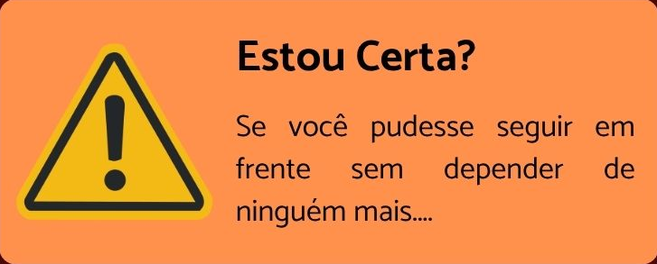
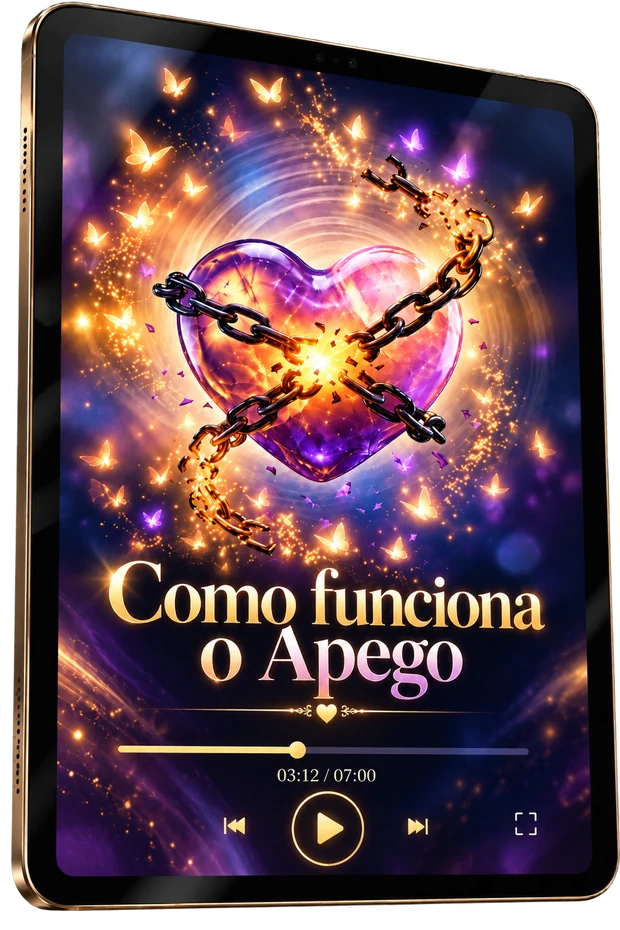
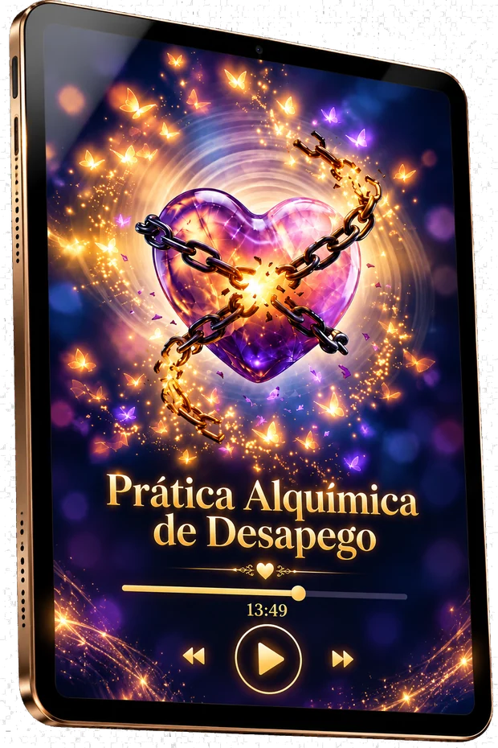

Marilia Hortacliente do Desapego de Uma Vez
Veja como elas conseguiram seguir em frente com o Desapego de Uma Vez.

Aline Antunescliente do Desapego de Uma Vez

Anna Rachelcliente do Desapego de Uma Vez

É horrível ficar presa nisso né?
Você não aguenta mais sofrer por alguém que não sente o mesmo que você.
Mas está difícil seguir em frente.

Se a sua resposta for “SIM”, o Desapego de Uma Vez é para você.
É uma prática de 7 dias (podendo ser feita por até 21 dias se precisar) para te ajudar a se desapegar emocionalmente, parar de alimentar esse vínculo e seguir em frente.
Você começa a diminuir aquele ciclo de pensamentos, lembranças e cenas que fazem você voltar para essa pessoa todos os dias.
13 minutos por 7 dias, você ouve a prática guiada do Desapego. Nesse passo, você irá sentir diminuir a carência, a saudade e o apego, dia após dia.
Depois de tanto tempo com a mente presa nessa pessoa e nessa história, você começa a SEGUIR EM FRENTE e se abrir para uma nova vida.
Descubra, sem misticismo, por que sua cabeça continua voltando para ele mesmo quando a razão já entendeu que acabou: é química. Quando você entende o que está acontecendo no seu cérebro, para de se culpar e de se chamar de fraca. E química pode ser reconfigurada.

O primeiro passo para começar do jeito certo. Um guia simples e direto para preparar sua mente, seu ambiente e sua rotina antes de iniciar o processo de desapego. Você entende o que fazer, o que evitar e como se preparar para aproveitar melhor os próximos 7 dias e seguir o método sem se perder pelo caminho.
O coração do método. Um áudio guiado para você repetir todos os dias durante 7 dias, criado para ajudar a tirar da sua cabeça aquela pessoa que você não consegue esquecer. Você dá o play, fecha os olhos e apenas acompanha a condução. Uma prática simples e guiada para você romper o ciclo de pensamentos que faz sua mente voltar para ele o tempo todo.

Você também vai receber…
17 Afirmações para ajudar você a soltar a necessidade de esperar, controlar ou buscar respostas nessa pessoa e começar a direcionar sua atenção para a própria vida.
Se você se identifica com ao menos 2 desses pontos acima e quer conseguir seguir em frente em 7 dias… o DESAPEGO DE UMA VEZ é para você.
Mas somente hoje você pode ter acesso imediato ao Desapego de Uma Vez por um valor muito mais acessível
Por apenas:
Assim que finalizar sua compra, você vai receber seu acesso no e-mail.
Em poucos minutos chega no seu e-mail o seu login da área de membros. Vale checar o spam.
Agora você já pode começar o seu Desapego de Uma Vez para seguir em frente.

Sou a criadora do Desapego de Uma Vez.
Há 18 anos ajudo mulheres a saírem do apego e da dependência emocional. Ao longo desses anos, já ajudei centenas de mulheres a se libertarem emocionalmente e voltarem a se sentir bem com elas mesmas.
Agora, chegou a sua vez de desapegar de uma vez e seguir em frente mais leve e segura.
Mais um mês igual a esse. Continuar presa ao que já passou, voltando sempre para os mesmos pensamentos e sentimentos.
Investir R$87,00 no Desapego de Uma Vez e começar agora a seguir em frente sem medo, deixando esse peso para trás e voltando a cuidar de você.
Eu sei e você também sabe: a opção 2 é a mais inteligente.
Então clique no botão abaixo e acesse agora mesmo o Desapego de Uma Vez
Por apenas:
É uma prática de 7 dias (podendo ser feita por até 21 dias se precisar) para te ajudar a se desapegar emocionalmente, parar de alimentar esse vínculo e seguir em frente.
Sim. Você pode usar o Desapego de Uma Vez sempre que sentir que precisa se desprender emocionalmente de uma pessoa ou situação e seguir em frente.
Não. Você pode fazer para qualquer pessoa ou situação da qual sente que precisa se desapegar emocionalmente para conseguir seguir em frente.
Sim. Se essa pessoa ainda ocupa seus pensamentos e mexe com você, você pode fazer o Desapego de Uma Vez, independentemente de quanto tempo passou.
Sim. Você pode fazer mesmo estando na relação.
Sim. Você não precisa ter namorado para criar um apego. Se está difícil esquecer ou parar de pensar nessa pessoa, o Desapego de Uma Vez é para você.
Sim. Desapegar não significa apagar o que foi bom. Significa conseguir guardar o que viveu sem continuar presa emocionalmente àquela pessoa.
Sim. Você pode começar agora. Não precisa esperar meses ou anos para cuidar do que está sentindo e começar a seguir em frente.
Você tem 7 dias para conhecer o Desapego de Uma Vez. Se perceber que não é para você, pode solicitar o reembolso dentro desse prazo.